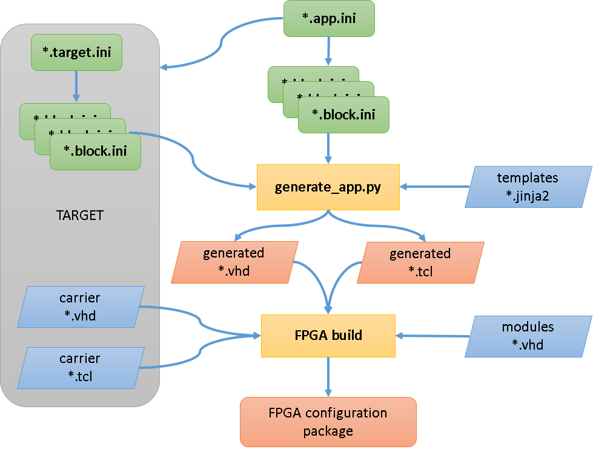

Writing a Block
If you have checked the list of Available Blocks and need a feature that is not there you can extend an existing Block or create a new one. If the feature fits with the behaviour of an existing Block and can be added without breaking backwards compatibility it is preferable to add it there. If there is a new type of behaviour it may be better to make a new one.
This page lists all of the framework features that are involved in making a Block, finding a Module for it, defining the interface, writing the simulation, writing the timing tests, documenting the behaviour, and finally writing the logic.
Architecture
An overview of the build process is shown in this diagram, the stages and terminology are defined below:
Modules
Modules are subdirectories in modules/ that contain Block definitions. If
you are writing a soft Block then you will typically create a new Module for it.
If you are writing a Block with hardware connections it will live in a Module
for that hardware (e.g. for the FMC card, or for that Target Platform).
To create a new module, simply create a new directory in modules/
Block ini
The first thing that should be defined when creating a new Block is the
interface to the rest of the framework. This consists of an ini file that
contains all the information that the framework needs to integrate some VHDL
logic into the system. It lives in the Module directory and has the extension
.block.ini. It consists of a top level section with information
about the Block, then a section for every Field in the Block.
The [.] section
The first entry to the ini file describes the block as a whole. It looks like this:
[.]
description: Short description of the Block
entity: vhdl_entity
type: dma or sfp or fmc
constraints:
ip:
otherconst:
extension:
The description should be a short (a few words) description that will be
visible as a Block label to users of the PandABlocks Device when it runs.
The entity should be the name of the VHDL entity that will be created to
hold the logic. It is typically the lowercase version of the Block name.
The type field will identify if the block is an SFP, FMC or DMA. These are
special cases and need to be handled differently. This field is automatically
set to soft for soft blocks or carrier for carrier blocks.
The constraints is used to identify the location of any xdc constraints
files, relative to the module’s directory.
The ip field holds the name of any ip blocks used in the module’s vhdl code.
otherconst is used to locate a tcl script if the block needs any further
configuration.
If the extension field is present then the extensions directory in the
module must exist and contain a python server extension file.
[FIELD] sections
All other sections specify the Field that will be present in the Block. They look like this:
[MYFIELD]
type: type subtype options
description: Short description of the Field
extension: extension-parameter
wstb:
The section name is used to determine the name of the Field in the resulting Block. It should be made of upper case letters, numbers and underscores.
The type value gives information about the type which specifies the
purpose and connections of the Field to the system. It is passed straight
through to the field specific line in the config file for the TCP server so
should be written according to type documentation. Subsequent indented lines
in the config file are supplied according to the type value and are
documented in Extra Field Keys.
If type is set as extension_write or extension_read the block is
a hidden register. It has a hardware register but does not generate block
names.
The description value gives a short (single sentence) description about
what the Field does, visible as a tooltip to users.
If extension is specified then this field is configured as an extension
field. If the extension_read or extension_write fields are also
specified then this field does not generate its own hardware register but uses
the specified registers. If fields use extensions an [extension].py needs to
be created.
If a signal uses a write strobe wstb should be set to True.
Extra Field Keys
Some field types accept extra numeric keys in the Field section to allow extra information to be passed to the TCP server via its config file.
Enum fields would contain numeric keys to translate specific numbers into user readable strings. Strings should be lowercase letters and numbers with underscores and no spaces. A typical field might look like this:
[ENUM_FIELD]
type: param enum # or read enum or write enum
description: Short description of the Field
0: first_value
1: next_value
2: another_value
8: gappy_value
Tables will be defined here too
Block Simulation
The Block simulation framework allows the behaviour to be specified in Python and timing tests to be written against it without writing any VHDL. This is beneficial as it allows the behaviour of the Block to be tied down and documented while the logic is relatively easy to change. It also gives an accurate simulation of the Block that can be used to simulate an entire PandABlocks Device.
The first step in making a Block Simulation is to define the imports:
from common.python.simulations import BlockSimulation, properties_from_ini, \
TYPE_CHECKING
if TYPE_CHECKING:
from typing import Dict
The typing imports allow IDEs like PyCharm to infer the types of the
variables, increasing the chance of finding bugs at edit time.
The BlockSimulation is a baseclass that our simulation should inherit from:
- class common.python.simulations.BlockSimulation[source]
- changes = None
This will be dictionary with changes pushed by any properties created with properties_from_ini()
Next we read the block ini file:
NAMES, PROPERTIES = properties_from_ini(__file__, "myblock.block.ini")
This generates two objects:
NAMES: Acollections.namedtuplewith a string attribute for every field, for comparing field names with.PROPERTIES: Apropertyfor each Field of the Block that can be attached to theBlockSimulationclass
Now we are ready to create our simulation class:
class MyBlockSimulation(BlockSimulation):
INP, ANOTHER_FIELD, OUT = PROPERTIES
def on_changes(self, ts, changes):
"""Handle field changes at a particular timestamp
Args:
ts (int): The timestamp the changes occurred at
changes (Dict[str, int]): Fields that changed with their value
Returns:
If the Block needs to be called back at a particular ts then return
that int, otherwise return None and it will be called when a field
next changes
"""
# Set attributes
super(MyBlockSimulation, self).on_changes(ts, changes)
if NAMES.INP in changes:
# If our input changed then set our output high
self.OUT = 1
# Need to be called back next clock tick to set it back
return ts + 1
else:
# The next clock tick set it back low
self.OUT = 0
This is a very simple Block, when INP changes, it outputs a 1 clock tick
pulse on OUT. It checks the changes dict to see if INP is in it, and
if it is then sets OUT to 1. The framework only calls on_changes()
when there are changes unless informed when the Block needs to be called next.
In this case we need to be called back the next clock tick to set OUT back
to zero, so we do this by returning ts + 1. When we are called back next
clock tick then there is nothing in the changes dict, so OUT is set back
to 0 and return None so the framework won’t call us back until something
changes.
Note
If you need to use a field name in code, use an attribute of NAMES. This
avoids mistakes due to typos like:
if "INPP" in changes:
code_that_will_never_execute
While if we use NAMES:
if NAMES.INPP in changes: # Fails with AttributeError
Timing ini
The purpose of the .timing.ini file is to provide expected data for comparison in the testing of the modules. Data should be calculated as to how and when the module will behave with a range of inputs.
The [.] section
The first entry to the ini file describes the timing tests as a whole. It looks like this:
[.]
description: Timing tests for Block
scope: block.ini file
[TEST] sections
The other sections will display the tests inputs and outputs. It looks like this:
[NAME_OF_TEST]
1: inputA=1, inputB=2 -> output=3
5: inputC=4 -> output=7
6: inputD=-10 -> output=0, Error=1
The numbers at the left indicate the timestamp at which a change occurs, followed by a colon. Any assignments before the -> symbol indicate a change in an input and assignments after the -> symbol indicate a change in an output.
Target ini
A target.ini is written for the blocks which are specific to the target. This ini file declares the blocks and their number similar to the app.ini file.
The [.] section
The first entry to the ini file defines information for the SFP sites for the target:
[.]
sfp_sites:
sfp_constraints:
The sfp_sites type is the number of available SFP sites on the target, and
the sfp_sites type is the name of the constraints file for each SFP site,
located in the target/const directory.
[BLOCK] sections
The block sections are handled in the same manner as those within the app.ini file, however the type, unless overwritten in the block.ini files for these blocks is set to carrier, rather than soft.
Writing docs
Two RST directives, how to structure
Block VHDL entity
How to structure the VHDL entity